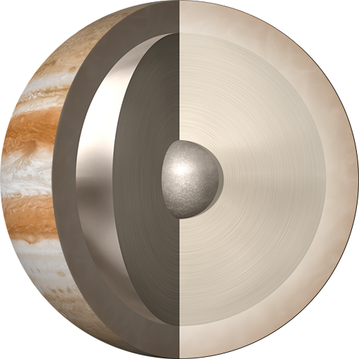

Jupiter is the largest planet of the Solar System, with a mass 2.5 greater than all of the rest of the planets combined - but still only one-thousandth that of the Sun.
Star-like
Jupiter is the planet most like the Sun in terms of its composition. Although Jupiter would still need to be about 75 times as massive to fuse hydrogen and become a star, it would only need to be 13 times as massive to burn deuterium and become a brown dwarf.
Atmosphere
Jupiter spins on its axis faster than any other planet. Because of this rotation, Jupiter’s atmosphere is subject to high winds, which cause the atmosphere to form distinct bands of colour, like swirling vortices and gigantic anticyclonic storms.
Moons
Jupiter governs the largest number of moons of any planet, with the current official total being 67. The four largest are the Galilean moons: Io, Europa, Ganymede, and Callisto. Ganymede, the largest moon in the Solar System, has a diameter greater than that of the planet Mercury.
Observation
Jupiter is the fourth brightest object in our skies after the Sun, Moon and Venus. Because the orbit of Jupiter is outside the Earth’s, the planet always appears nearly fully illuminated when viewed through Earth-based telescopes.
Structure
| Layer | Composition |
|---|---|
| Atmosphere | Molecular hydrogen and helium |
| Mantle | Liquid-metallic hydrogen and helium |
| Core | Dense solid rock |
Atmosphere
Jupiter is composed primarily of gaseous and liquid matter. There is no surface, only a gradual change from the atmosphere. Conditions blend smoothly from gas to liquid as the temperature and pressure inside Jupiter increase steadily toward the core.
Mantle
The surrounding liquid hydrogen is responsible for Jupiter’s massive magentic field, which is 10 times stronger than Earth’s , with the magnetic pole strength being nearly 20,000 times stronger than the Earth's pole strength.
Core
Jupiter is thought of have adense core. The exact composition of the core is unknown, as are the properties of materials at the temperatures and pressures of those depths, but it is thought to be solid.
{kind=link}
{kind=link}
{kind=link}
{kind=link}
{kind=link}
{kind=link}
{kind=link}
{kind=link}
{kind=link}
{kind=link}
{kind=link}
{kind=link}